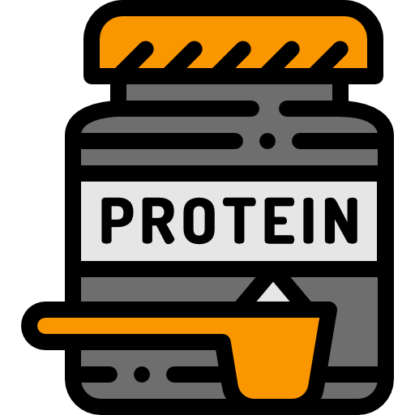
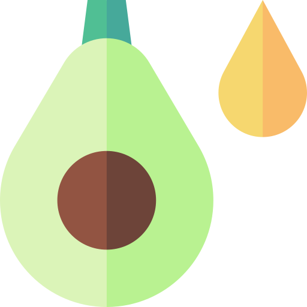
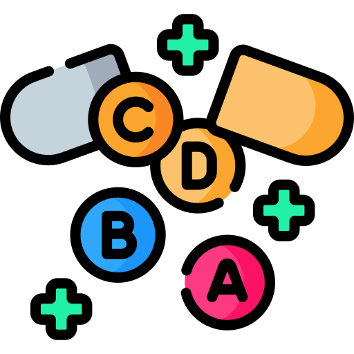
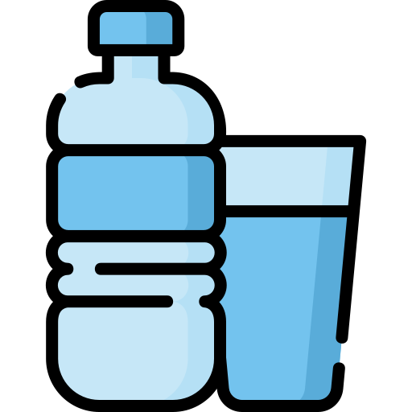

Essential Nutrients
A healthy diet provide your boidy with the nurtial that is require to grow. As it helps to revievr and perfor of the best of your ability. In this section you will find out the 5 nutrins that are essenstion and why thsy should be important in your fitness jorunery.

Protein
Protein is an essential macronutrinet that is made up of buildig blocks called animo acids. During workout your muslce fibres tear, especially during stren training, where your muslce fibres devlop tiny tears. The amino acids in protein are used to repair these muscle fibres so they become stronger over time
Learn More
Carbohydrates
Carbohydrates are one of the body main sources of energy. When you eat carbohydrates, your body will break them down into glucose (sugar), then it gets used to fuel your muscles, your brain , and the other organs too. They are especially important for giving you momentum and endurance during physical activity, and also for supporting your body during recovery after workouts.
Learn More
Healthy Fats
Healthy fats are really an essential macronutrient, they feed your body with long lasting energy and they keep a lot of important systems running. They help you absorb vitamins, they act like a cushion and protect your organs too. They also have a role in brain health, and they’re involved in producing hormones. If you eat healthy fats in the right amounts, as part of a balanced diet, it is better for better overall health.
Learn More
Vitamins & Minerals
Vitamins an minerals are nutrients that your body needs in small amounts , in order to stay healthy and keep functioning normally. They help your immune system, add strength to your bones , help with energy production, and they are also part of how muscles work and recover.They are not a source of energy (carbohydrates or fats) but are critical for overall health and fitness.
Learn More
Water
Water is a required nutrient, it keeps the body hydrated and helps proper function. It also helps maintain body temperature , carries nutrients and oxygen, helps carry away waste, and supports muscle function. During exercise rehydration is especially crucial because it improves performance, helps with recovery, and it replaces fluids lost through sweat.
Learn MoreMeal Plans Based on Your Goal
Everyone has different fitness goals. In this section you can find bigner firodny ways to gain msucle and to lose fat.
Beginner Muscle Gain
Here you can find more about bulking and the way to do that.
Download Meal Plan